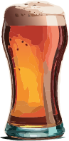

Her er vores top 5 grunde til hvorfor du burde drikke Trøjborgbrygs alkoholfrie øl
-
Efter en god fodbold træning, så der mange som drikker en øl for hyggens skyld. Alkoholfri øl forbedrer hydrering, minimerer dehydrering og forbedrer restitutionen efter træning.
-

Vi gør det muligt for alle at deltage uden hensyn til alkoholpræferencer. Vi fremmer en inkluderende og ansvarlig social kultur. Vi sørger for at alle kan drikke med god samvittighed.
-

Trøjborgbrygs alkoholfrie øl passer til forskellige præferencer og smagsprofiler. Vi gør vores bedste for at du kan nyde en alkoholfri øl, ligeså meget som en almindelig øl.
-
Alkoholfri øl muliggør socialt samvær uden de potentielle negative virkninger af alkohol. Det et nemt at drikke alkoholfri øl, og stadig hygge sig, hvis du for eksempel skal kører bil.
-

Alkoholfri øl reducerer sundhedsrisici som er forbundet med alkoholforbrug. Alkoholfri øl fremme generel trivsel og god livstil.
Hvis du vil læse mere om vores øludvalg, så tryk her.